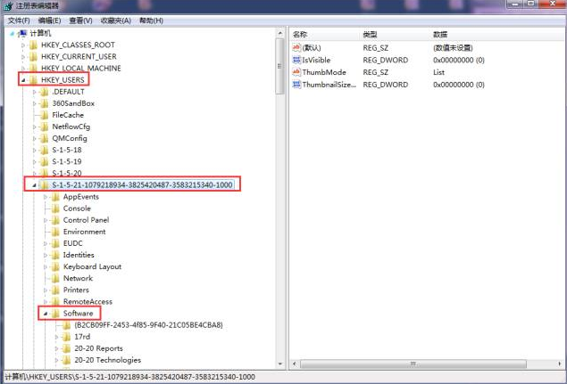
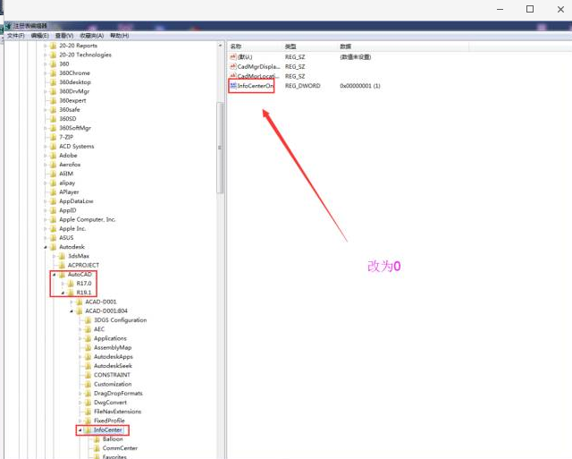

第2节：导出CAD异常处理
二、导出CAD异常处理
问题一：CAD导出空白问题
解答：导出cad柜体图纸时需要稍等片刻。柜子比较复杂时，更应耐心等待，过早干扰cad会导致导出失败或缺少板件
首先检查设置方面
（1）打开CAD，输入字母op后回车，按照下图设置即可
（2）右击“我的电脑”，点击“管理”，进入服务，确保Distributed Transaction Coordinator和Remote Procedure Call (RPC) 以及Security Accounts Manager三个服务都是已启动状态，如果没有启动，鼠标右键启动它。

（3）打开注册表，定位到HKey_Users展开，下面有好几个S-1-??????的，找到自己这个用户，通常是第二长的那个（不带_Classes后缀的），展开，定位到Software/Autodesk/AutoCAD/R18.0/ACAD-8001:804（英文版的就是409），定位到InfoCenter，右边的InfoCenterOn，双击编辑值，改为0就OK了。


问题二：出现下列异常弹窗
解答：重装CAD（CAD必须为2012或2014版，注意：不要卸载后重装，要点cad卸载之时弹出的窗口界面点重装即可）
问题三：出现下面异常弹窗
解答：点击确定后重新导出CAD即可
问题四：出现下面异常弹窗
解答：cad中毒，使用杀毒软件杀毒
问题五：无法打印全部标注
解答：在打不出标注的布局窗口内，右键--着色打印--线框